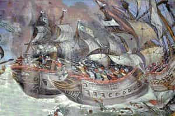
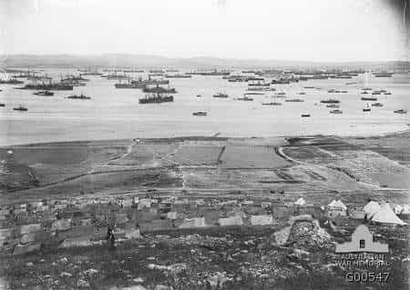
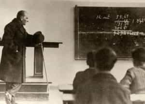
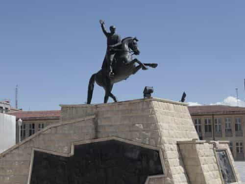

There are times in history when a man of humble birth rises to the occasion when his nation is in mortal danger. Mustafa Kemal Atatürk was one of them.
A very brief historical background

The Battle of Lepanto demonstrated that the Ottomans were not unstoppable
During the 16th Century, Europe was awakening from its long medieval slumber. However, the Ottoman Turks also were on the rise. They expanded their territory in the Balkans, overrunning the region entirely. They made inroads into Eastern Europe, and even threatened Central Europe. If Vienna hadn’t held out, the region would’ve been in grave peril. They further expanded elsewhere, taking over North Africa, making further gains in significant parts of the Middle East, and building a powerful navy.
However, after the death of Suleiman the Magnificent, the Turks were bereft of effective leadership for centuries. Succeeding sultans typically were either embarrassingly incompetent or hopelessly decadent. Like so many empires, they coasted along for a good while on initial successes, but became stagnant. Eventually they slipped into a period of decay and corruption. Sounds familiar?
The Ottoman Empire began to crumble, eventually becoming the “Sick Man of Europe”. Nationalist sentiment was on the rise, and revolts occurred in the Balkans. Further, the Ottomans began to lose their grip on North Africa. Russia was ascending, assuming control of territory on their side of the Black Sea and aiding independence in the Balkans.
By the early 20th Century, they had lost nearly all their holdings in Europe, and much of their gains elsewhere were lost. They were rocked by political instability. Their far-flung empire—one of the largest the world had seen—was in deep decline. Turkey itself was very multicultural, and without a strong government to suppress by force the inevitable tensions, fissures in their core homeland became evident.
Following the outcome of WWI, the Ottoman Empire’s extraterritorial holdings were eliminated, mostly to be incorporated into the British and French empires. Further than that, the Treaty of Sèvres would’ve formalized foreign occupation zones deep into their homeland. The treaty never got ratified, because the British went one step further and took over their government.
For the Turks, surely all this was a profound humiliation. It was much like the victors had done to Germany, but worse. The only good news for the Turks was that they were spared a Versailles Treaty style shakedown that devastated the German economy.
Note that it’s not my intention to whitewash the past. (Neither am I going to delve into current events.) Any major country has its share of dirty laundry, and Turkey’s history certainly had its gruesome moments, to say the least. The point is that their nation’s heartland was about to be dismembered; the Turks had every right to resist, just as we must preserve our own nations.
Mustafa Kemal Atatürk’s military career

They came loaded for bear, but resistance was fiercer than expected
The “War to End All Wars” was a great catastrophe setting the stage for the “War to Make the World Safe For Democracy”, which in turn led to the Cold War. This was further the beginning of the (thus far) decline of the West. On the Turkish front, the British sought to clear a shipping lane to their Russian allies through the Dardanelles and eventually to the Black Sea. Winston Churchill, then a naval commander, proposed to take the straits with battleships and ground troops. Overconfidence (a bad habit of his) led him to believe the “Sick Man of Europe” could offer little resistance.
The following campaign became the Battle of Gallipoli. The Turkish commander who repelled the British invasion was none other than Mustafa Kemal. Losses were heavy on both sides, particularly devastating for Australian forces. As the Anzac Cove memorial touchingly declares:
Those heroes that shed their blood and lost their lives…
You are now lying in the soil of a friendly country. Therefore rest in peace. There is no difference between the Johnnies and the Mehmets to us where they lie side by side here in this country of ours…
You, the mothers, who sent their sons from faraway countries wipe away your tears; your sons are now lying in our bosom and are in peace, after having lost their lives on this land they have become our sons as well.
Ataturk, 1934
The British also carried out a campaign in the Ottoman Empire’s remaining Middle Eastern holdings, during which an actual Battle of Armageddon (Megiddo) took place. With great effort, Mustafa Kemal got a handle on the chaotic situation and stopped the British advance at Aleppo.
After the war, foreign troops occupied Istanbul. The victors, poised to divide Turkey, demanded disarmament. Following the Ottoman surrender, Mustafa Kemal became active in nationalist politics. He refused to disband the forces under his command, as ordered by the government at behest of the occupying British. Instead, he worked behind the scenes to encourage resistance.
When the British found out in 1920, they demanded his arrest. While on the run, he got a death warrant. Failure was not an option! This set in motion a chain of events leading to the British dissolving the Ottoman government.
Before long, Turkish resistance led to armed conflict, with Mustafa Kemal soon commanding the military. Fighting erupted on several fronts. Often it was quite gruesome on both sides, though not equaling the horrendous excesses during WWI. The Turks regained control of their homeland, and by October 1922, Turkey was at peace. Thenceforth the policy was reconciliation, not revenge.
Turkey reborn

Education was a major feature of the national renewal
Soon after, the provisional government abolished the Sultanate. The following January, Greece and Turkey agreed to a population transfer. Creating territorial integrity is the best way to alleviate smoldering tensions between diverse populations with long historical grievances. Later in 1923, the Republic of Turkey was born. Mustafa Kemal—who in 1934 was officially dubbed Atatürk, “Father of the Turks”—became its first President, serving until his death in 1938. The 1920s and 1930s were a tumultuous time of grim struggle and energizing rebirth throughout many nations, and Turkey was one of them.
Atatürk steered a strongly secular course. (It’s hard to say how deeply he felt religion; he kept his personal views to himself.) He soon abolished the Caliphate, banned religious garb, and mandated the Turkish language Quran. He banned polygamy and instituted women’s rights—not the crazy feminism we have here, of course, but simply equality under the law.
Other than that, he looked to Western success for inspiration to modernize Turkey. He abolished Sharia law (as well as other religious codes) and instituted one legal system for all, borrowed from elements of European systems. He began standardizing the language and switched to a modified Roman alphabet. He reformed education as well, and did much to remedy the terrible illiteracy problem.
The Great Depression was devastating the world’s economy. On the economic front, Atatürk instituted a plan to pay down the national debt that Turkey had inherited. Agrarian land reforms were implemented, a national bank was established, industry was promoted, and the railroad network grew quickly.
Although not without controversy, Atatürk’s legacy is that of an enlightened reformer who recovered Turkey from a fate of near-oblivion, then bringing his nation out of despotic theocratic backwardness and moving forward into modern civilization. His economic legacy is that Turkey remains the most prosperous Middle Eastern country with the exception of Israel and oil-rich states in the Arabian Peninsula. Turks would do well to keep following his vision, and their labor will further develop their homeland’s economy. Other nations in the region would benefit from Atatürk’s example.
Conclusion

The Turks once were a great world power, but lost their empire that had fattened them on the spoils of conquest. The major problem was that the victors of WWI abrogated their national sovereignty, and their homeland where they were a majority was about to be divided up and reduced to obscurity. They didn’t submit to defeatism; they restored their nation.
As we can see, a course of decline leading to utter ruin can be reversed if the right actions are taken (obviously the sooner the better). With the people’s solidarity—and exceptional individuals—a nation can be reborn. Perhaps this story beginning a century ago may inspire us today.
Read More: 5 Lessons About Building A Nation From Singaporean Political Visionary Lee Kuan Yew